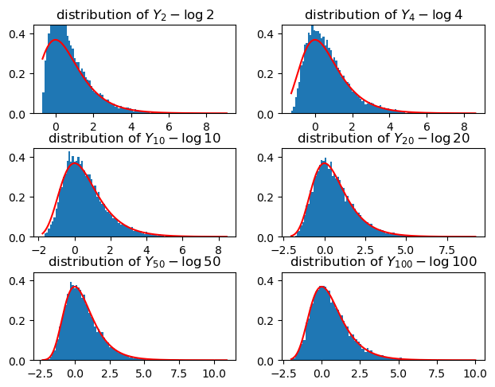

I recently learned about the Gumbel softmax trick, which seemingly allows smooth sampling from a discrete distribution. In writing this post, I want to learn more about the Gumbel distribution that appears in this trick, details on the trick may follow in a separate post.
The main component in the softmax trick is the following distribution, due to Gumbel (aptly named after him).
Definition (Gumbel distribution)
For \(\mu \in \mathbf R\) and \(\beta \in \mathbf R_{> 0}\) the \(\operatorname{Gumbel}(\mu, \beta)\) distribution has the CDF \[
\begin{align*}
F: (-\infty, \infty) \to (0, 1) && x \mapsto \exp \left( -\exp \left( - \frac{x - \mu}{\beta} \right) \right).
\end{align*}
\]
Let us quickly ensure that this defines a distribution: this CDF is strictly monotonically increasing and for \(x \to -\infty\) it goes to \(0\), while for \(x \to \infty\) it goes to \(\exp(0) = 1\). By differentiating the CDF we obtain the density (with respect to Lebesgue measure), which is \[
\frac{1}{\beta} \exp \left( - \frac{x - \mu}{\beta} -\exp \left( - \frac{x - \mu}{\beta} \right) \right),
\] so the distribution is a continuous one.
Simulating from this distribution is straight-forward using the inverse CDF trick: simulate \(U \sim \operatorname{Unif}(0,1)\) and let \[G = F^{-1}(U) = -\beta\log( -\log (U)) + \mu,\] then \(G \sim \operatorname{Gumbel}(\mu, \beta)\). Let’s draw some samples from the standard Gumbel distribution, i.e. where \(\mu = 0\) and \(\beta = 1\).
Code
import numpy as npimport matplotlib.pyplot as pltdef sim_gumbel(n, mu, beta):return- beta * np.log(-np.log(np.random.uniform(size=n))) + mudef density_gumbel(x,mu,beta):return (1/beta) * np.exp(-(x-mu)/beta-np.exp(-(x-mu)/beta))sims = sim_gumbel(1000, 0, 1)xmin, xmax =min(sims), max(sims)plt.hist(sims, bins=30, edgecolor='black', density=True)plt.plot(np.linspace(xmin, xmax, 1000), density_gumbel(np.linspace(xmin, xmax, 1000), 0, 1), 'r')plt.title(f"{len(sims)} Gumbel(0,1) draws with mean {np.mean(sims):.2f} and standard deviation {np.std(sims):.2f}")plt.axvline(np.mean(sims), color='grey', lw=2, linestyle="--")plt.show()
From these simulations and the right skew visible in the density, we can guess that the mean of the standard Gumbel is not \(0\). Indeed, if \(G \sim \operatorname{Gumbel}(0,1)\), then 1\[
\mathbf E G = \int_{0}^1 F^{-1}(u) \mathrm d u = \int_{0}^1 -\log( - \log u) \mathrm d u = \gamma \approx 0.5772,
\] where \(\gamma\) is the Euler-Mascheroni constant.
1 see wikipedia, I have not been able to find a concrete proof of this yet
From the definition, we can see that the Gumbel distributions form a location-scale family, i.e. if \(G \sim \operatorname{Gumbel}(\mu, \beta)\), then \(aG + b \sim \operatorname{Gumbel}(a\mu + b, a^2\beta)\). Similar to the normal distribution, this allows us to focus on the standard Gumbel distribution \(\operatorname{Gumbel}(0,1)\).
The origins of the Gumbel distribution go back to the early 1930s, when Gumbel discovered the distribution as a limiting distribution of the maximum i.i.d. exponentially distributed samples. This makes the Gumbel distribution one of the three GEV (generalized extreme value) distributions, the others being the Fréchet and the reverse Weibull distribution. Actually, if \(X \sim \operatorname{Gumbel}(0,1)\), then \(\exp (X)\) and \(- \exp(-X)\) follow a Fréchet and a reverse Weibull distribution respectively.
Theorem (limit theorem for the Gumbel distribution)
For \(i \in \mathbf N\) let \(X_i \stackrel{\text{i.i.d.}}{\sim} \operatorname{Exp}(1)\) and let \(Y_n = \max \{X_1, \dots, X_n\}\) be the maximum value in the first \(n\) samples. Then, as \(n \to \infty\), \[
Y_{n} - \log n \stackrel{\mathcal D}{\longrightarrow} \operatorname{Gumbel}(0, 1).
\]
Proof
The CDF of \(Y_n - \log n\) is, for \(y \geq - \log n\), \[
\begin{align*}
\mathbf P \left( Y_{n} - \log n \leq y \right) &= \mathbf P \left( Y_{n} \leq y + \log n \right) = (1 - \exp(-(y + \log n)))^{n} \\
&= \left(1 - \frac{\exp(-y)}{n}\right)^{n}\to \exp(-\exp(-y)) = F(y).
\end{align*}
\]
Again, let’s verify by simulation that this is true, comparing to the density of the standard Gumbel distribution.
Code
def sim_exponential(n, lambd):return-1/lambd * np.log(np.random.uniform(size=n))fig, axs = plt.subplots(3,2)fig.tight_layout()ns = [2, 4, 10, 20, 50, 100]m =10000for ax, n inzip(axs.flatten(), ns): X = sim_exponential((m, n), 1) Y = np.max(X, axis =1) Z = Y - np.log(n) min_z, max_z =min(Z), max(Z) ax.hist(Z, bins=100, density=True) ax.plot(np.linspace(min_z, max_z, 1000), density_gumbel(np.linspace(min_z, max_z, 1000), 0, 1), 'r') ax.set_title(f"distribution of $Y_{{{n}}} - \\log {n}$")# mode of gumbel distribution is at mu ax.set_ylim(0, 1.2* density_gumbel(0,0,1))plt.show()

As you can see, already for \(n=10\) there is good fit between the distribution of \(Y_n - \log n\) and \(\operatorname{Gumbel}(0, 1)\).
In the limit theorem, we had to subtract \(\log n\) from the maximum. Intuitively, this is necessary to ensure that the maximum does not diverge to \(\infty\), so we obtain an actual distribution in the limit. This is similar to subtracting the mean in the central limit theorem (CLT).
Similar to the CLT, the limit theorem holds for a much larger class of distributions, not just exponential distributions and similar to the CLT we have to stabilize the maxima to obtain a valid limit. The next theorem makes this precise.
Let \(X_i, i \in \mathbf N\) be a sequence of i.i.d. random variables, let \(Y_n = \max_{i = 1, \dots, n} X_i\) be the running maximum and consider \[
Z_{n} = Y_{n} - b_{n},
\] for a sequence of real numbers \(b_n\), such that for every \(k\)\(b_{kn} - b_n\) converges as \(n\to \infty\) for every \(k\).2
If \(Z_n\) converges in distribution to a distribution with an injective CDF3, then the limiting distribution is a Gumbel distribution.
3 again, could not get rid of this either
2 I could not get rid of this technical assumption, see the sidenotes in the proof.
Proof
I basically follow (Johnson, Kotz, and Balakrishnan 1995) in this proof. Let \(G\) be the CDF of the limiting distribution and \(Z \sim G\) and denote general CDFs by \(F\). We have to show that \[
G(x) = \exp \left( - \exp \left( -\frac{x - \mu}{\beta} \right) \right)
\] for some \(\mu \in \mathbf R\) and \(\beta \in \mathbf R_{> 0}\). Let \(k\in\mathbf N\) and partition the random variables into blocks of size \(n\), and consider the block-wise maximum, i.e. \[
\begin{align*}
Y^{j}_{n} = \max_{i = 1, \dots, n} X_{(j - 1)k + i} && j = 1, \dots, k.
\end{align*}
\] Let \(Z^j_n = Y^j_n - b_n\) and let \(n \to \infty\). Then \(Z^j_n \stackrel{\mathcal D}{\longrightarrow} Z\) for \(j = 1, \dots, k\).
Now \(Z_{kn} = \max_{j = 1, \dots, k} Z^j_n + b_{n} - b_{kn}\) also converges to \(Z\) in distribution. By the properties of the CDF and the i.i.d. assumption, we have \[
F_{Z_{kn}} (z) = \mathbf P \left( \max_{j = 1, \dots k} Z^{j}_n \leq z - b_{n} + b_{kn} \right) = (F_{Z^{1}_n}(z - b_{n} + b_{kn}))^{k}.
\] As \(n\) goes to \(\infty\), the left hand side converges to \(G(z)\), and so the right-hand side does as well. Assuming \(-b_n + b_{kn} \to c_{k}\) as \(n\to \infty\), the right-hand side converges to \(G(z - c_k)^k\) as well. 4 Thus \[
G(z) = G(z - c_{k})^{k},
\] or, equivalently, \[
G(z + c_{k}) = G(z)^{k}.
\] This implies \[
G(z + c_{k} + c_{l}) = (G(z)^{k})^{l} = G(z)^{kl} = G(z + c_{kl}),
\] so \(c_k + c_l = c_{kl}\), if \(G\) is injective 5. Thus \(c_k = \xi\log k\) for some \(\xi \in \mathbf R\).
Taking logs twice, we obtain \[
\log k + \log (- \log G(z)) = \log - \log G(z + \xi \log k),
\] and so \(z \mapsto \log (- \log G(z))\) is an affine function, which was just what we had to show.
Finally, to check whether this works, let us perform some simulations for the maximum of \(n\) standard normal draws.
Code
from scipy.stats.distributions import normfig, axs = plt.subplots(3,2, figsize=(15,5))fig.tight_layout()ns = [2, 4, 10, 20, 50, 100]m =100000for ax, n inzip(axs.flatten(), ns): X = np.random.normal(0, 1, (m, n)) Y = np.max(X, axis =1) min_z, max_z =min(Y), max(Y) ax.hist(Y, bins=100, density=True) mu = norm.ppf(1-1/n) beta = norm.ppf(1-1/ n / np.exp(1)) - mu ax.plot(np.linspace(min_z, max_z, 1000), density_gumbel(np.linspace(min_z, max_z, 1000), mu, beta), 'r') ax.set_title(f"max of {n} standard normal draws")# mode of gumbel distribution is at mu ax.set_ylim(0, 1.2* density_gumbel(mu,mu,beta))plt.show()
References
Haan, L. de, and Ana Ferreira. 2006. Extreme Value Theory: An Introduction. Springer Series in Operations Research. New York ; London: Springer.
Johnson, Norman L., Samuel Kotz, and Narayanaswamy Balakrishnan. 1995. Continuous Univariate Distributions. Vol. II. John Wiley & Sons, Ltd.